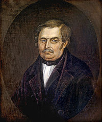

Василева грамота
Бунін онук Гоголя Або Реінкарнація Васілія Афанасієвіча
Джерело двох душ Гоголя, над яким б'ються літературознавці..
.... та ідеологи, пояснюється просто.
Рідним батьком нашого героя був
Василь Афанасієвіч Гоголь-Яновський
 Передчасна смерть рідного малоросійського батька Васілія Афанасієвіча сталася 1825 року, внаслідок чого молодий кар'єрист безбатченком їде до Петербурга, де зазнає очікуваної літературноі поразки (Ґанс Кюхельґартен) та тікає за кордон.
Пізніше Гоголь знайомиться з іншим (другим) Васілієм Афанасієвічем, який влаштує літературну кар'єру свого молодого друга (сина) і все життя буде дбати про фінансові цензурні політичні справи Миколи Васильовича.
Саме він порадить молодому драматургу тікати з Росії після успіху «Ревізора» та профінансує "римські канікули" Гоголя і "Мертві душі", проб'є їх видання разом з обрусєвшим (другим) Тарасом Бульбою.
Отже, хто він - другий батько Гоголя, придворний чародій, продюсер Пушкіна, вчитель імператорів та портрет, який продали за "двє с половиною тищі рублєй", на які була куплена свобода Пророка?
Васілій Андрєєвіч Жуковський
 Але чому ми називаємо його Афанасієвічем?
Але чому ми називаємо його Афанасієвічем?
Дореволюційні біографи та родичі Жуковського стверджують, що його справжнім батьком був тульський поміщик Афанасій Бунін.
Матір'ю "портрета свободи" була жінка, захоплена в полон при штурмі міста Бендери і викуплена в рабство кріпосним Буніна для подарунка господарю за можливість поїхати на війну з комерційними цілями. (Кому война - кому мать родна?). Заплатив за кілька років ВІЛЬНОЇ торгівлі рабинею. Вдумайтеся, рабиня, яка була куплена рабом для подарунка господарю, стала матір'ю "портрета свободи" та вчителя царя-визволителя! Офіційним батьком байстрюка став (всиновивши Васю) київський (!) поміщик Андрій Жуковський, який жив у Буніна. За деякими даними він робив перші спроби навчання свого сина.
"Київський бендерівець" - син бендерівки (без лапок) і київського поміщика - Жуковський буде вчитися коштом сім'ї Буніна (який рано помер) в Москві у випускників Київської Академії. Ось звідки у Жуковського український сентимент.
Ось герб роду Жуковських - які знайомі мотиви.
Але чим займається Василій у вільний від Гоголя час?
Він працює вихователем в родині царя, яка викупить знаменитий портрет «Дорогого Васілія Андрєєвіча» за справді шалені гроші. Він навчає нового "доброго" царя і теж успішно. Олександр ІІ звільнить Шевченка (вдруге), а потім всіх кріпосних імперії зробить живими душами із власними мріями, надіями, помилками та поразками.
Отже, Гоголь - "онук" Буніна.
Васілій Жуковський помер за кілька місяців по смерті Гоголя.